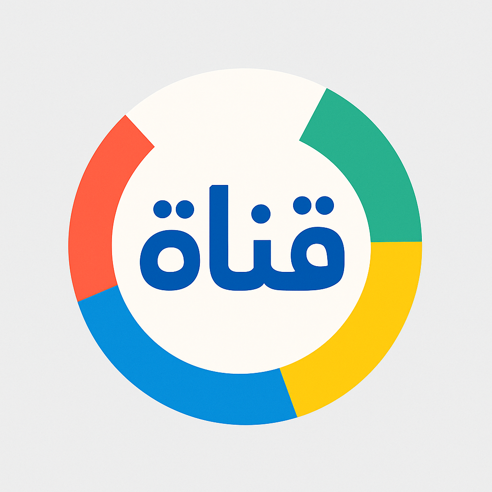

قناة اقرأ وارتق - قران
تعليم التلاوة والتجويد.
ديني٦-٩ سنواتعربي
زيارة القناةالملاك الصغير
أناشيد إسلامية موجهة للصغار.
ديني٣-٥ سنواتعربي
زيارة القناةأناشيد ورسوم دينية للأطفال
محتوى ديني وأناشيد أطفال.
ديني٣-٥ سنواتعربي
زيارة القناةكلام - إسلامية
قصص دينية للأطفال.
ديني٦-٩ سنواتعربي
زيارة القناةداود - قران
تلاوات قرآنية بصوت طفل.
ديني٦-٩ سنواتعربي
زيارة القناةميمي لتعليم القران الكريم
تعليم قصار السور بطريقة محببة.
ديني٣-٥ سنواتعربي
زيارة القناةأهلاً سمسم
نسخة عربية من شارع سمسم تُعزز المهارات العاطفية والاجتماعية.
تعليمي٣-٥ سنواتعربي
زيارة القناةحياة عايلتنا
قناة عائلية لمشاركة اليوميات والتجارب الحياتية.
ترفيهي+١٠ سنواتعربي
زيارة القناةسراج
برنامج علمي ممتع يشرح المفاهيم للأطفال.
تعليمي٦-٩ سنواتعربي
زيارة القناةآدم ومشمش
أناشيد تفاعلية لتعليم الأطفال الحروف والكلمات.
تعليمي٣-٥ سنواتعربي
زيارة القناةتعلم مع نور
تجارب علمية مبسطة وشيقة للأطفال.
تجارب٦-٩ سنواتعربي
زيارة القناةقناة كرزة
رسوم وأناشيد تربوية للأطفال الصغار.
تعليمي٣-٥ سنواتعربي
زيارة القناةعمر وهناء
تعليم السلوكيات والمهارات اليومية.
تعليمي٣-٥ سنواتعربي
زيارة القناةقناة ريان
محتوى ترفيهي متنوع للأطفال.
ترفيهي٣-٥ سنواتعربي
زيارة القناةالدنيا روزي
كرتون تعليمي ممتع.
ترفيهي٣-٥ سنواتعربي
زيارة القناةقناة ماجد
برامج متنوعة وأفلام كرتونية.
ترفيهي٦-٩ سنواتعربي
زيارة القناةعزوز وجود
قصص ومغامرات تعليمية.
ترفيهي٦-٩ سنواتعربي
زيارة القناةبابل
محتوى تعليمي تفاعلي باللغة الإنجليزية.
تعليمي٦-٩ سنواتعربي
زيارة القناةCrash course kids
مفاهيم علمية مبسطة.
تعليمي٦-٩ سنواتإنجليزي
زيارة القناةScishow
تجارب علمية للأطفال الكبار.
تجارب+١٠ سنواتإنجليزي
زيارة القناةNat Geo Kids
اكتشاف الطبيعة والحيوانات.
تعليمي٦-٩ سنواتإنجليزي
زيارة القناةNumberblocks
تعليم الأرقام والعد.
تعليمي٣-٥ سنواتإنجليزي
زيارة القناةBumblenums
أناشيد طبخ مرحة وتعليمية.
تعليمي٣-٥ سنواتإنجليزي
زيارة القناةWizz explore
محتوى استكشافي للأطفال.
تجارب٦-٩ سنواتإنجليزي
زيارة القناةLittle learners
تعليم الحروف والكلمات.
تعليمي٣-٥ سنواتإنجليزي
زيارة القناةBounce patrol
أناشيد تعليمية وحركية.
تعليمي٣-٥ سنواتإنجليزي
زيارة القناةStarfall
تعليم الإنجليزية للأطفال.
تعليمي٣-٥ سنواتإنجليزي
زيارة القناةLucymax English
تعليم الإنجليزية والمفردات.
تعليمي٣-٥ سنواتإنجليزي
زيارة القناةBing bag academy
علوم وتجارب للأطفال الأكبر.
تعليمي+١٠ سنواتإنجليزي
زيارة القناةCbeebies
قناة BBC الموجهة للأطفال.
ترفيهي٣-٥ سنواتإنجليزي
زيارة القناة
Kids 123
محتوى أرقام وتعليم بسيط.
تعليمي٣-٥ سنواتإنجليزي
زيارة القناةGuess Who much I love you
قصص كرتونية رقيقة.
ترفيهي٣-٥ سنواتإنجليزي
زيارة القناةDanny go
أناشيد وحركة للأطفال.
ترفيهي٣-٥ سنواتإنجليزي
زيارة القناةLucas & Friends
أناشيد وتعليم مبسط للصغار.
تعليمي٣-٥ سنواتإنجليزي
زيارة القناة